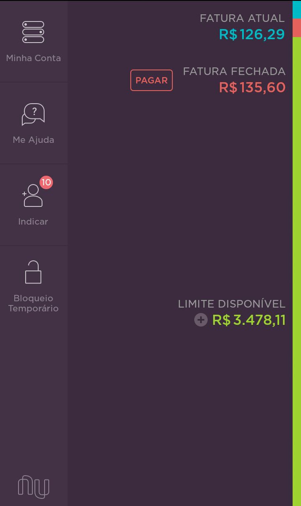
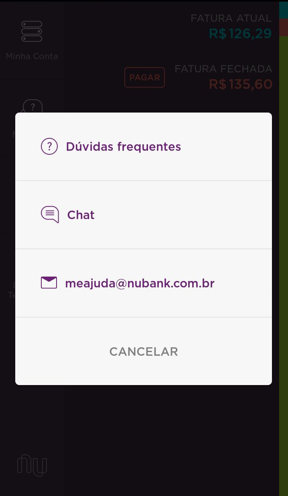
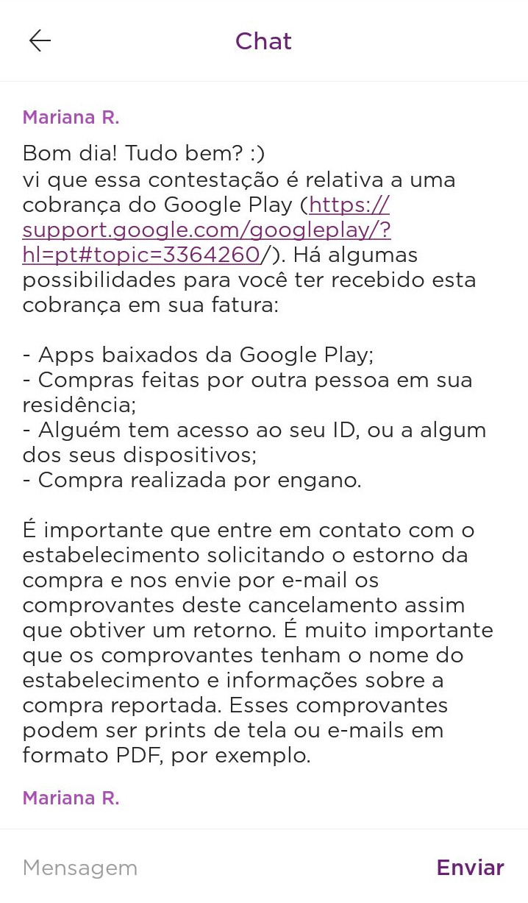
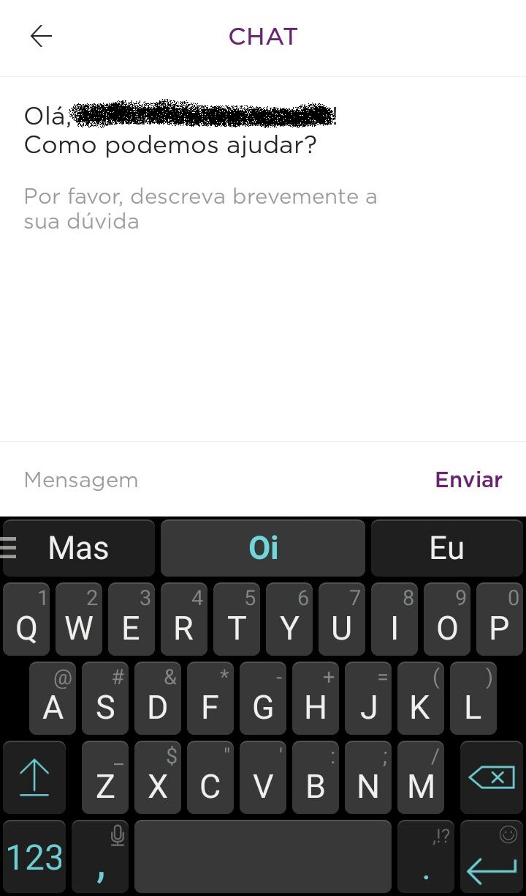
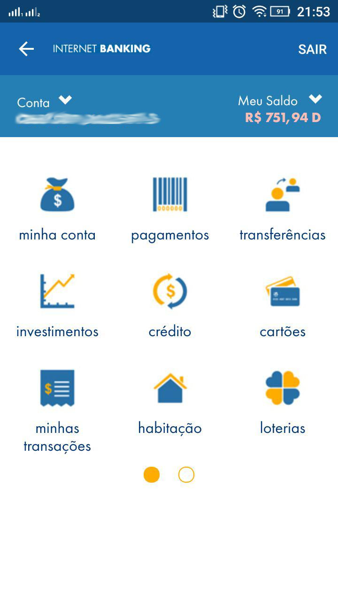
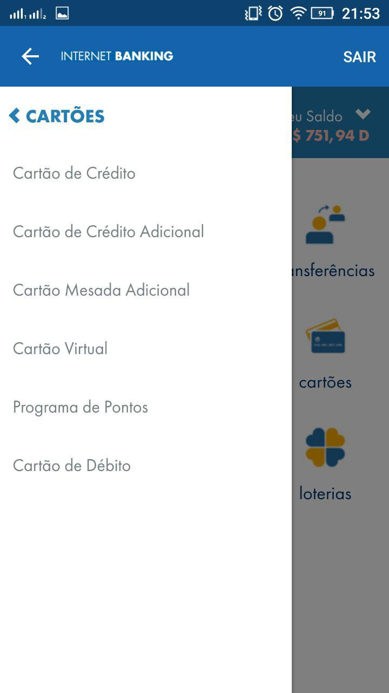
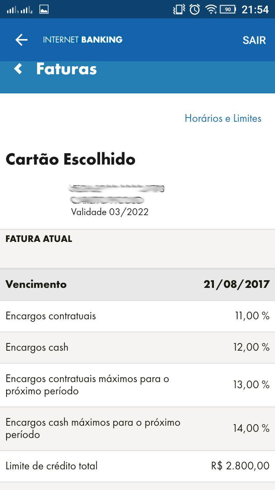
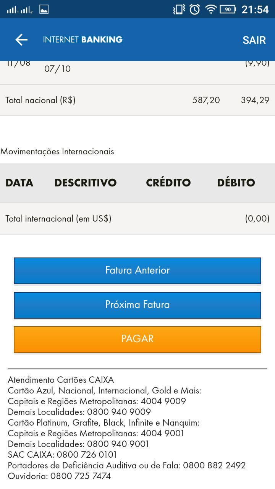

Análises de Protocolo
Usuários Nubank
Contexto: Pagamento do Boleto
Página inicial do aplicativo:
"Na página inicial você tem o quanto você gastou, as informações dos gastos, e passando para o lado você tem acesso ao valor e um botão para gerar o boleto. Essa é só uma das opções para gerar o boleto, mas normalmente eu costumo usar mais essa."
 |
 |
"Após pedir ele para gerar o boleto ele te passa informações sobre o seu pagamento, avisando que o pagamento leva até 3 dias para atualizar, e você clica em continuar para prosseguir."
 |
"Agora você pode editar o valor da sua fatura, se deseja pagar menos ou o valor total, normalmente eu sempre pago o valor total da fatura próximo ao vencimento mesmo."
 |
"Ele gera um código, eu seleciono e copio para pagar pelo Internet Banking."
Análise feita por Isaque Alves, em 03/09/2017.
Contexto: Conversa com o Atendente
Conversa com o atendente:
"Entra na tela principal do nubank, onde tem o limite disponível a fatura fechada e a fatura atual. Clica no me ajuda."
|  |
"Logo depois abre uma tela com várias opções e clica em em chat. "
|  |
"Na tela chat tem as últimas conversas que conversei com o banco."
|  |
"Depois entro em um site de mensagem onde tem o campo de mensagem e o botão de enviar. Depois de feita a mensagem é só enviar."
|  |
Análise feita por Sannya Arvelos, em 03/09/2017.
Usuários de bancos tradicionais
Contexto: Pagamento da Fatura
Fluxo Principal:- Manter anotações dos pagamentos realizados com o cartão de crédito;
- Receber a fatura (gera F.A. 1):
- por correios;
- por e-mail;
- Conferir os valores apresentados na fatura com os anotados ao longo do mês (gera F.A. 2)
- Optar por pagamento integral ou parcelado, dependendo do valor;
- Ligar para o serviço de pagamentos do banco;
- Escolher a opção de débito da fatura;
- Agendar a data para débito na conta-corrente;
- Autorizar o débito para pagamento (gera F.A. 3)
F.A. 1 - A Fatura não foi recebida por e-mail ou correios dentro do prazo:
- Contatar o banco.
F.A. 2 - Os valores anotados não coincidem com os da fatura:
- Revisar os valores anotados em busca de erros;
- Revisar os valores anotados em busca de errosProcurar os serviços de atendimento do banco para resolver o problema.
Saldo insuficiente na conta-corrente para debitar a fatura:
- Parcelar o valor, em caso de pagamento integral;
- Utilizar opções especiais de crédito para completar o valor.
Análise feita por Felipe Hargreaves, em 03/09/2017.
Contexto: Pagamento de Fatura - Aplicativo Caixa
Pagamento de Fatura:- Abre o aplicativo Caixa;
- Entrar com usuário e senha;
Após o login, a página principal com as funcionalidades disponíveis se abre (minha conta, pagamentos, transferência, investimento, crédito, cartões, minhas transações, habitação, loterias, FGTS, inss, seguradora, etc)
|  |
- Clica em cartões, menu lateral aparece;
|  |
- Faturas
- Pagar
|  |  |
Análise feita por Mariana Pícolo, em 03/09/2017.